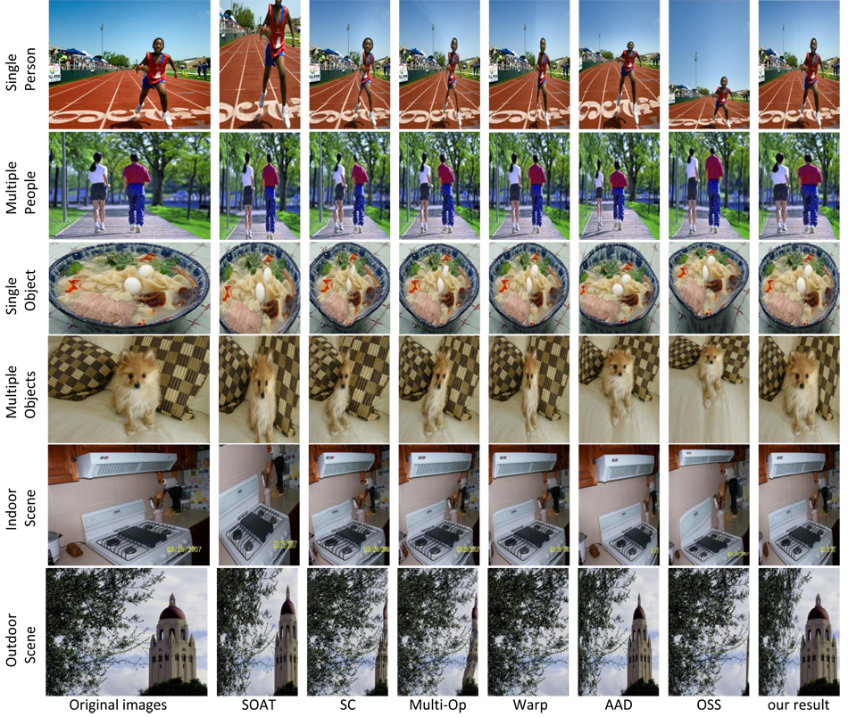

Performance
Quantified Evaluation
We compare our importance maps with state-of-the-art saliency generating methods under the four evaluation criteria of the MIT saliency benchmark[5] and the Mean Average Error (MAE). For EMD, KL, MAE, the lower the better while for CC and SIM, the higher the better.
It can be observed that our fusion network performs best on the S-Retarget dataset under all evaluation metrics.
Table 1. Evaluation on importance maps on the validation-set in the S-Retarget dataset.
Retargeting Results
We applied our system on S-Retarget dataset as well as the RetargetMe[1] dataset. The following retargeting results show that our method can better preserve the semantic meanings in images.

Figure 3. Comparisons with SOAT, ISC, Multi-operator, Warp, AAD , OSS on S-Retarget dataset. 6 rows show the results for single person, multiple people, single object, multiple objects, indoor scene and outdoor scene, respectively

Figure 4. Results on RetargetMe dataset. Target images are obtained by using 3 retargeting methods (AAD, Multi-Op, and IF, and 9 importance maps ( eDN, GC, oriIF, DNEF, RCC, fine-tuned MC, fine-tuned Mr-cnn, fine-tuned SalNet and our method).
We also conducted human evaluations on the Amazon Mechanical Turk (AMT). Our target image and the result by a baseline are shown in randomly order to the AMT workers, who are asked to select the better one. The evaluation results are shown below. Each element stands for a contrastive result, for example, the number “2985(255)” means our result is preferred by 2,985 times while the corresponding baseline method is favored by 255 times.
Table 2.
Comparison between our importance map and 8 baseline maps when combined with 3 different carriers on S-Retarget dataset.

Table 3.
Comparisons with state-of-the-art retargeting systems on S-Retarget dataset.

Table 4.
Comparison between our importance map and 8 baseline maps when combined with 3 carriers on RetargetMe dataset.

Click here for more visualization and analysis
References
- M. Rubinstein, D. Gutierrez, O. Sorkine, and A. Shamir, A comparative study of image retargeting, in ACM TOG, 2010.
- A. Mansfield, P. Gehler, L. Van Gool, and C. Rother, Visibility maps for improving seam carving, in ECCV Workshops, 2010.
- T. Liu, J. Sun, N.-N. Zheng, X. Tang, and H.-Y. Shum, Learning to detect a salient object, in CVPR, 2007.
- Q. Yan, L. Xu, J. Shi, and J. Jia, Hierarchical saliency detection, in CVPR, 2013.
- Z. Bylinskii, T. Judd, A. Borji, L. Itti, F. Durand, A. Oliva and A. Torralba. MIT Saliency Benchmark. http://saliency.mit.edu/.
| 2016, by Zhen Wei |

|